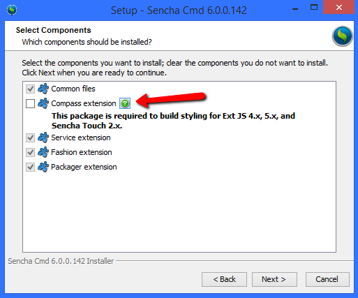

Sencha Cmd 是一个跨平台的命令行工具，在你的应用程序的整个生命周期 - 从创建项目到部署项目 - 提供了很多自动化功能.
接触 Sencha Cmd
Sencha Cmd 提供了很多强大、省时的功能，结合 Sencha Ext JS 和 Sencha Touch 框架. Sencha Cmd 具备以下能力:
- 代码生成工具: 用来生成整个应用程序的代码生成工具，也可生成应用程序需要的 MVC 组件.
- JS 编译器: 一个框架感知的 JavaScript 编译器，可以理解 Sencha 框架的语义，用最少的步骤 build 你的代码. 编译器可以优化 Sencha 的很多高级别的语义，以减少应用程序加载时间.
- Web 服务器: 提供了一个轻量级的 Web 服务器, 托管文件在 localhost 下.
- 包(Package)管理系统: 分布式包(Package)管理系统，方便集成第三方或者 Sencha Package Repository 的包(比如 Ext JS 主题).
- 集成Sencha Web 应用程序管理 - 方便发布新版本应用程序到 Sencha Web 应用程序管理服务器.
- Workspace 管理: 用于在多个应用程序之间共享框架, 包和自定义代码.
- 构建脚本(Build Scripts): 生成应用程序和包的 build script，用于“before” 和 “after” 扩展点，这样你可以自定义 build 过程，以满足你的需求.
- Cordova / PhoneGap 集成: 原生打包，把 web 应用程序 转为 优秀的移动端应用程序，而且可以调用设备功能，可以上架App Store.
- 截图CSS3: 把 CSS3 效果 (比如圆角border-radius 和 渐变linear-gradient)转为背景图片，以兼容传统浏览器.
- 优化工具: 强大的代码选择工具，用来优化 你的应用程序最终 build 包含什么、使用高级操作决定跨页面的公共代码和共享代码，使 build 的结果符合你的期望.
- 灵活的配置系统: 在应用程序或 workspace 级别或计算机上的所有 workspace，给 Sencha Cmd 参数启用默认值.
- 日志记录: 强大的日志功能来帮助您理解的内部运作命令和便于故障诊断.
- 第三方软件: 对于 Sencha Touch 和 Ext JS 5，甚至更旧的框架, Sencha Cmd 内置了一个兼容版本的 Compass 和 Sass.
- 用于代码生成的钩子程序: 可用于单个页面或 workspace 中的所有页面, 比如, 当添加了新的 model 类的时候，检查其代码规范.
兼容性
Sencha Cmd 支持 Sencha Ext JS 4.1.1a 及更高版本，支持 Sencha Touch 2.1 及更高版本. 很多需要框架支持的 Sencha Cmd 功能则只能在此版本或更高版本中才可用. 一些低级别的命令可以用于低版本 Sencha 框架，或者 JavaScript.
如果你在使用旧版本的 Ext JS, 你可能是通过 JSB 文件来用 Sencha Cmd 的build 命令构建的. 也就是, Sencha Cmd可以替代JSBuilder，把 JSB 文件中描述的那些文件，生成压缩过的版本. Sencha Cmd 不会更新你的 JSB 文件，而是由已经废弃的 SDK Tools v2 更新的.
Sencha Touch 2.0 和 Sencha Ext JS 4.0 需要已经废弃 SDK Tools v2, 这个工具不能用于以后版本的 Touch 或 Ext JS.
系统安装
Sencha Cmd 6 安装包内置了构建(build) Ext JS 6 应用程序所需要的所有软件, 所以只要下载 Sencha Cmd 即可:
正在用旧的框架
如果你正在用旧版本的 Ext JS 或 Sencha Touch 框架 , 你需要勾选 “Compass extension” :

你还应该要安装 Ruby，来编译主题和 Sass. 不同操作系统，Ruby安装方式不一样:
- Windows: 从 rubyinstaller.org 下载安装 Ruby. Get the
".exe"file version of the software and install it. - Mac OS: Ruby 已经预安装了. 你可以使用Ruby -v 命令查看是否安装.
- Ubuntu: 使用 sudo apt-get install ruby2.0.0命令安装 Ruby.
如果你要用 Cordova 或 PhoneGap, 你还需要其它的东西才能安装这些工具. 请看 集成 Cordova 或 Phonegap.
安装包会把安装路径添加到 PATH 环境变量.
验证安装
要验证 Sencha Cmd 可以正常工作, 只要打开命令行, 执行sencha 命令.
你应该可以看到下面的输出:
Sencha Cmd v6.0.0.202
...输出的版本号应该和你安装的版本是一致的.
静默安装 Sencha Cmd
有些用户可能希望静默安装，而不需要安装界面. 如果你只要命令行安装过程, 只要执行下面的命令:
Mac OSX
SenchaCmd-6.x.y.z-osx.app/Contents/MacOS/JavaApplicationStub -qLinux
SenchaCmd-6.x.y.z-linux(-i386|-amd64).sh -qWindows
SenchaCmd-6.x.y.z-windows-(32|64)bit.exe -q这样就可以静默安装了.
改变安装位置
如果你要改变安装位置, 你需要指定“dir” 标记. 比如:
sudo SenchaCmd-6.x.y.z-linux(-i386|-amd64).sh -q -dir "/opt"注意:您选择安装路径可能需要更改权限.
升级 Sencha Cmd
sencha upgrade 命令可以用来升级 Sencha Cmd.
检查 Sencha Cmd 更新:
sencha upgrade --check不带--check 参数的话, sencha upgrade 命令会下载并安装最新版本:
sencha upgrade安装完毕后, 打开控制台 或 终端，查看 PATH 环境变量的更改.
因为 Sencha Cmd 支持多版本共存, 你完全可以尝试安装新版本，然后卸载 (或者修改 PATH 或 symlink) 来恢复之前的版本. 不过，用 sencha app upgrade 升级应用程序, 则更多的是一个源代码控制，如果你降级到旧Sencha Cmd, 你可能需要“回滚”.
静默升级 Sencha Cmd
有些用户可能希望静默升级，而不需要安装界面. 如果你只要命令行升级过程, 只要执行下面的命令:
sencha upgrade --unattended这样就可以静默升级了.
Beta 版本
如果你要检查 beta 版本, 可以用:
sencha upgrade --check --beta安装 最新beta 版本:
sencha upgrade --beta注意 有可能当前最新版本就是上一个“beta” 或稳定版. 也就是说, sencha upgrade --beta 安装的 beta 版本可能比最新发布的版本(sencha upgrade安装的版本)要旧.
基本命令
Sencha Cmd 功能按照类别 (或模块) 和命令区分:
sencha [category] [command] [options...] [arguments...]"帮助" 可以用 help 命令.
sencha help [module] [action]比如:
sencha help显示当前版本，以及可用命令. 比如:
Sencha Cmd v6.0.0.202
...
Options
* --beta, -be - Enable beta package repositories
* --cwd, -cw - Sets the directory from which commands should execute
* --debug, -d - Sets log level to higher verbosity
* --info, -i - Sets log level to default
* --nologo, -n - Suppress the initial Sencha Cmd version display
* --plain, -pl - enables plain logging output (no highlighting)
* --quiet, -q - Sets log level to warnings and errors only
* --sdk-path, -sd - The location of the SDK to use for non-app commands
* --strict, -st - Treats warnings as errors, exiting with error if any warnings are present
* --time, -ti - Display the execution time after executing all commands
Categories
* app - Perform various application build processes
* compile - Compile sources to produce concatenated output and metadata
* cordova - Quick init Support for Cordova
* diag - Perform diagnostic operations on Sencha Cmd
* fs - Utility commands to work with files
* generate - Generates models, controllers, etc. or an entire application
* manager - Commands for interacting with Sencha Web Application Manager.
* manifest - Extract class metadata
* package - Manages local and remote packages
* phonegap - Quick init support for PhoneGap
* repository - Manage local repository and remote repository connections
* template - Commands for working with templates
* theme - Commands for low-level operations on themes
* web - Manages a simple HTTP file server
Commands
* ant - Invoke Ant with helpful properties back to Sencha Cmd
* audit - Search from the current folder for Ext JS frameworks and report their license
* build - Builds a project from a legacy JSB3 file.
* config - Load a properties file or sets a configuration property
* help - Displays help for commands
* js - Executes arbitrary JavaScript file(s)
* upgrade - Upgrades Sencha Cmd
* which - Displays the path to the current version of Sencha Cmd下面是翻译:
Sencha Cmd v6.0.0.202
...
参数
* --beta, -be - 启用测试包库
* --cwd, -cw - 设置命令执行的目录
* --debug, -d - 设置日志级别为更高的详细输出
* --info, -i - 设置日志级别为默认
* --nologo, -n - 抑制初始 Sencha Cmd 版本的显示
* --plain, -pl - 开启普通日志输出(不高亮显式)
* --quiet, -q - 设置日志只输出警告和错误
* --sdk-path, -sd - 指定 SDK 路径, 用于非 app 命令
* --strict, -st - 将警告视为错误，如果出现警告则退出
* --time, -ti - 显示所有命令执行后的执行时间
类别
* app - 执行各种应用程序的构建(build)过程
* compile - 编译源码, 生成合并输出文件和元数据
* cordova - 快速初始化支持 Cordova
* diag - 对 Sencha Cmd 执行诊断操作
* fs - 处理文件的实用命令
* generate - 创建 models, controllers, 等类. 或创建应用程序
* manager - 和Web应用程序管理器交互的命令.
* manifest - 提取类的元数据
* package - 管理本地或远程的包(packages)
* phonegap - 快速初始化支持 PhoneGap
* repository - 管理本地库和远程库的连接
* template - 用于应用程序模板的命令
* theme - 低级别的操作主题的命令
* web - 用于管理一个简单的 HTTP 文件服务器
命令
* ant - 使用 Sencha Cmd 调用 Ant 的一些有用的特性
* audit - 搜索当前文件夹下的 Ext JS 框架和报告它们的许可证
* build - 根据以前的 JSB3 文件构建项目.
* config - 加载一个属性文件或设置一个配置属性
* help - 显示命令的帮助
* js - 执行任意JavaScript文件
* upgrade - 升级 Sencha Cmd
* which - 显示当前版本的 Sencha Cmd 的安装路径具体内容可能根据你安装的版本不同而不同.
当前目录
许多情况下, Sencha Cmd 需要你设置一个特定的当前目录. 或者它需要知道相关 Sencha SDK 的详细信息. 当 Sencha Cmd 运行在应用程序目录下，SDK (或“框架framework”) 可以被自动检测到, 少数命令需要一个参数来指定 SDK 目录.
下面这些命令需要注意, Sencha Cmd 需要在应用程序的根目录下执行, 否则会执行失败.
* `sencha generate ...` (for commands other than `app`, `package` and `workspace`)
* `sencha app ...`包(Packages) 也是这样. 当执行像 sencha package build这种命令, 当前目录必须是包文件夹.
Sencha Cmd 文档
关于使用 Sencha Cmd 的很多细节已经组织好，有助于你的理解，推荐你遵循这个顺序. 往后跳跃可能会让你感到困惑，因为后面的高级内容都是假设你已经了解了基础内容.
每篇指南开头都提供链接，链接到需要提前了解的内容. 然后, 大部分指南结尾都提供延伸阅读的链接.
基础进阶
还有很多关系到 Sencha Cmd 使用的细节可能会有帮助. help命令可以参考, 但是如果你想进一步了解, 请查看 Sencha Cmd 进阶.
故障排除指南
这里有一些小贴士，可以解决使用Sencha Cmd时遇到的常见问题.
Command Not Found(命令未找到)
如果执行sencha时, 在 OSX/Linux 上提示错误 sencha: 命令未找到 或者 在 Windows 上提示错误'sencha' 不是内部或外部命令，也不是可运行的程序或批处理文件, 请按以下步骤解决:
- 关闭终端/命令窗口, 然后打开一个新的.
- 确保 Sencha Cmd 已经正确安装:
- 安装目录存在. 默认安装路径是:
- Windows:
C:\Users\Me\bin\Sencha\Cmd\{version} - Mac OS X:
~/bin/Sencha/Cmd/{version} - Linux:
~/bin/Sencha/Cmd/{version}
- Windows:
- Sencha Cmd 安装路径会添加到 PATH 环境变量中. 在终端/命令窗口中, 运行
echo %PATH%(Windows) 或echo $PATH(Mac/Linux). Sencha Cmd 的安装路径应该是输出结果中的一部分. 如果没有, 请手动添加到 PATH 环境变量.
- 安装目录存在. 默认安装路径是:
Cannot find Ruby(未找到 Ruby)
如果你遇到的错误是关于没有识别或找到"ruby"的，大概原因是因为 没有安装 Ruby，或者没有添加安装路径到 PATH 环境变量. 请看上面的系统安装 部分.
如果你用的是 Ext JS 6, 你不会看到这个错误信息，因为 Ext JS 6 用的是 Fashion 而不是 Compass, Fashion 不需要依赖 Ruby.
Wrong Current Directory(当前目录错误)
一个常见的错误是在非 SDK 目录或应用程序目录下执行命令. 如果条件不满足, Sencha Cmd 会报错并退出
注意 用 Sencha Cmd 创建的应用程序的目录，才是有效的应用程序目录.
Errors While Resolving Dependencies(解析依赖发生错误)
sencha app build 命令会读取index.html 和 app.json 文件，然后扫描查找依赖的类. 如果你的应用程序中某些类声明不正确, build 通常会正常结束，只不过没有包含你的类而已.
为了确保 require 了你指定的类, 应该一直开启调试控制台 (IE/Chrome中的“开发人员工具(Developer Tools)”, FireFox 的 “FireBug”以及 Safari 的“Web检查器Web Inspector”)，并解决掉所有的警告和错误.
如果你看到下面的警告:
[Ext.Loader] Synchronously loading 'Ext.foo.Bar'; consider adding 'Ext.foo.Bar'
explicitly as a require of the corresponding class
(翻译)[Ext.Loader] 正在以同步方式加载 'Ext.foo.Bar'; 请考虑在相应类中显式地 require 类'Ext.foo.Bar'你应该把 ‘Ext.foo.Bar’ 添加到依赖于它的类的 requires 数组中. 如果整个应用程序都需要依赖它, 可以把它添加到app.js文件中Ext.application(...)声明里的 requires 数组中.